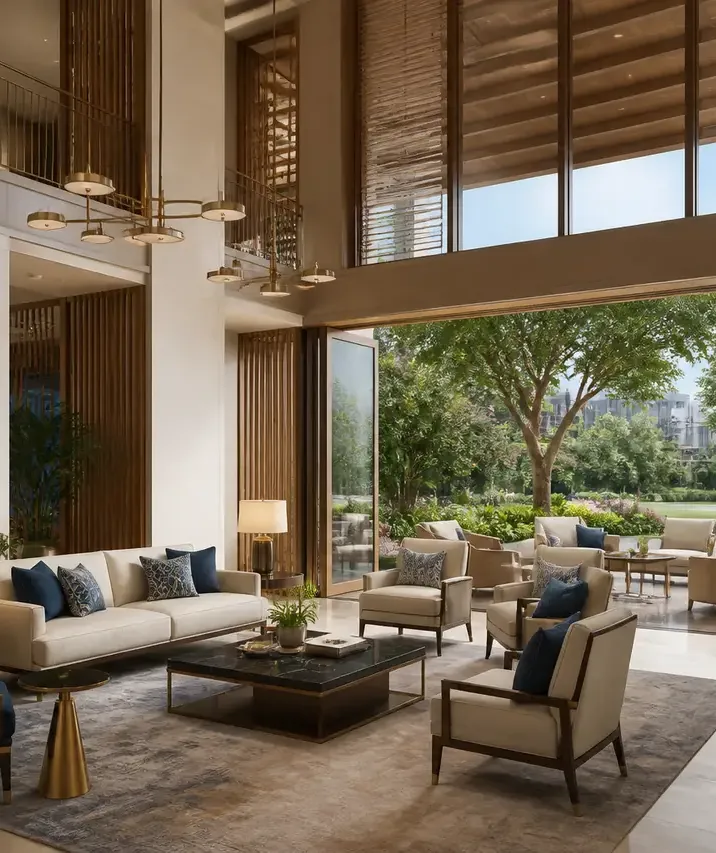

Sobha Hennur vs Goyal Kannuru
Sobha Hennur and Goyal Kannuru are both early-stage apartment projects on the Hennur Road corridor of North-East Bengaluru, and both list Bhartiya City among their nearest landmarks. This guide sets their known details side by side, so you can see how they differ before either one launches.
Sobha Hennur vs Goyal Kannuru at a glance
| Detail | Sobha Hennur | Goyal Kannuru |
|---|---|---|
| Developer | Sobha Limited | Goyal & Co. (Hariyana Group) |
| Location | Kannur and Chikkagubbi villages, Bidarahalli Hobli, Bengaluru East Taluk | Kannuru Village, Hennur Bagalur Road, Bengaluru East 560077 |
| Corridor | Hennur Road | Hennur Road |
| Format | Apartment township with offices, service apartments, shops and restaurants | Gated apartment community with its own clubhouse |
| Configurations | Nine types, from a serviced 1 BHK to 4 BHK | Announced at launch |
| Sizes | Area of each home at launch; the indicative price is for about 1,940 sq ft | Announced at launch |
| Stage | Pre-launch | Upcoming |
| Details as of | 17 October 2026 | 29 October 2026 |
Each column uses only that project’s own details. Where a cell says “at launch”, the developer has not released the figure yet.
Sobha Hennur vs Goyal Kannuru: distances compared
| Landmark | From Sobha Hennur | From Goyal Kannuru |
|---|---|---|
| Bhartiya City | About 3.4 km | About 2.9 km |
| Kristu Jayanti University | About 4.9 km | About 5.8 km |
| Manyata Tech Park | About 9 km | About 9.4 km |
| Yelahanka Junction Railway Station | About 9.6 km | About 7.4 km |
| Kempegowda International Airport | About 20.9 km (Terminal 1) | About 19 km |
Both sets are approximate driving distances. The two projects sit at similar distances from Bhartiya City and Manyata Tech Park. Goyal Kannuru is a little nearer Yelahanka Junction and the airport; Sobha Hennur is a little nearer Kristu Jayanti University.
Each project also lists places the other does not. Sobha Hennur gives Thanisandra Railway Station at about 6.5 km and the Hebbal Flyover at about 15.3 km; Goyal Kannuru gives REVA University at about 4.4 km and Delhi Public School Bangalore North at about 6.9 km.
Scale and format: a township and a gated community
Sobha Hennur’s size is already set out: about 50.45 acres, 13 towers of up to 42 floors and 4,463 homes, with about 37% of the land as green cover and 5,029 parking spaces. Its commercial precinct of offices, service apartments, shops and restaurants stands inside the same site.
Goyal Kannuru is planned as a gated apartment community with its own clubhouse. Its configurations, master plan and towers, amenity list and specifications are all announced at launch, so its size cannot yet be set against Sobha Hennur’s.
Home choices at Sobha Hennur and Goyal Kannuru
Sobha Hennur has nine home types: a 1 BHK Serviced Apartment and a 1 BHK; the 2 BHK Luxe, 2 BHK Grande and 2 BHK + Home Office; the 3 BHK Luxe and 3 BHK Grande; and 4 BHK Luxe and Grande homes with three or four bathrooms. Most of its homes are 3 BHK.
Goyal Kannuru’s homes and their areas are announced at launch. Until then, a buyer who already knows the home type they want can only check it against a published mix at Sobha Hennur.
Price and stage of the two projects
Sobha Hennur has an indicative price of about ₹1.86 Cr for about 1,940 sq ft, and the price of each home type is announced at launch. Goyal Kannuru’s prices are announced at launch, together with its homes and their areas.
Both are early: Sobha Hennur is in pre-launch and Goyal Kannuru is upcoming, so neither has a full price list today. When both release cost sheets, compare the total cost of homes of a similar carpet area, not the headline rates.
Who each one suits
Sobha Hennur may suit
- Buyers who want a wide choice of home types, from a serviced 1 BHK to a 4 BHK with four bathrooms.
- People who work from home and want the 2 BHK + Home Office.
- Families who want shops, restaurants and offices inside the township.
- Households with a student at Kristu Jayanti University, about 4.9 km away.
- Buyers who want to compare known land, towers and home counts before the price list.
Goyal Kannuru may suit
- Buyers who want a gated community with its own clubhouse and are happy to wait for its size.
- People who travel by train from Yelahanka Junction, about 7.4 km away by road.
- Those who fly often: the airport is about 19 km away.
- Parents considering Delhi Public School Bangalore North, about 6.9 km away, or students at REVA University, about 4.4 km away.
- Buyers content to wait for the configurations and prices at launch.
Visiting Sobha Hennur and Goyal Kannuru
Both projects lie on the Hennur Road side of North-East Bengaluru and both list Bhartiya City close by, so they can be seen on the same day. Book a Sobha Hennur visit through the form on this page. Goyal Kannuru has its own website at goyalkannuru.com, where you can register for it separately.
Sobha Hennur vs Goyal Kannuru summary
Sobha Hennur is a pre-launch Sobha Limited township with nine home types, 4,463 homes and an indicative price of about ₹1.86 Cr for about 1,940 sq ft. Goyal Kannuru is an upcoming Goyal & Co. gated apartment community with its own clubhouse, whose homes and prices come at launch. They sit at similar distances from Bhartiya City and Manyata Tech Park; the choice today is between published details and a project still to be announced.
Sobha Hennur vs Goyal Kannuru FAQs
Which is closer to Manyata Tech Park, Sobha Hennur or Goyal Kannuru?
They are similar: Sobha Hennur is about 9 km away and Goyal Kannuru about 9.4 km.
Do Sobha Hennur and Goyal Kannuru have prices yet?
Sobha Hennur has an indicative price of about ₹1.86 Cr for about 1,940 sq ft. Goyal Kannuru’s prices are announced at launch.
Which home types can I compare?
Sobha Hennur offers nine types, from a serviced 1 BHK to 4 BHK. Goyal Kannuru’s configurations are announced at launch.
Are both projects on the Hennur Road corridor?
Yes. Sobha Hennur is in the Hennur Road corridor across Kannur and Chikkagubbi villages, and Goyal Kannuru is at Kannuru on Hennur Bagalur Road.
Who develops each project?
Sobha Hennur is by Sobha Limited and Goyal Kannuru by Goyal & Co. (Hariyana Group).

Sobha Hennur Contact Us
Pre-launch: register for the price list of your home type, its floor plan and priority access